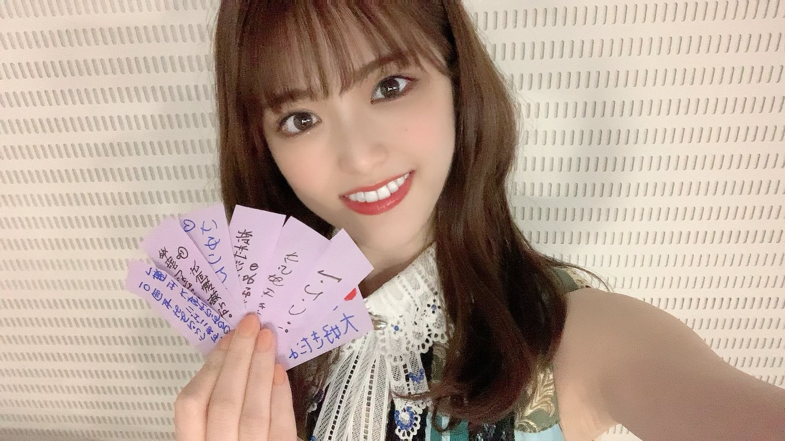

2021/0705Mon"これが最後"が多くなってっ(o・・o)
松村沙友理です

そろそろわたしの卒業が近づいて参りました！
卒業コンサートも無事に終わりました！
卒業コンサートはどの曲にも思い入れがあるので
ゆっくり書いていきたい...気持ちです。
今回はある日の私の心境を
ただつらつらと書きたいと思います
卒業を間近にした一人のアイドルの
なんて事ない記録だと思って適当に読んでもらえたら嬉しいです。
先日のTHE MUSIC DAYさんで
乃木坂46としてパフォーマンスするのは最後でした！
これまでも沢山の音楽番組で
私の卒業に触れて頂いて
花束なんか貰っちゃって
私は 自分の気持ちを話す時間を貰えたり
私なんかの為にお花まで用意してくださる事が
ただただ嬉しくて 心からの幸せを感じていました。
だからどの番組でもニコニコと
わーい♡はっぴー♡で過ごしていましたが
ついに本当の最後の日がきました。
私が大好きなメンバーと一緒に
歌って踊って笑い合える最後の日
メイクをしている時も
楽屋でみんなで番組を見ている時も
自分の出番を袖で待っている時も
何をしていても全てに最後だという
実感が湧いてきて
気を抜いたら泣いちゃうなと
ずっと涙を堪えていました。
泣いても良かったんじゃない？と
ファンの皆さんは言ってくれそうだけど
ただ泣くのが恥ずかしかったんです。笑
私の変な照れ隠しだったのかもしれません。
いつも通り終わりたかったのかもしれません。
メドレーが始まる前に
ぐるぐるカーテンのポジションに着いて
かっきーと久保ちゃんに挟まれて
「この二人に挟まれたら歌も上手に歌えそう〜♡」なんて冗談を言って後輩を困らせている時も
ずっとずっと
涙を我慢していました。
メドレーが始まると
不思議と涙は出なくって
このまま終わるのだと思ったら
ラストの曲
"ごめんねFingers crossed"
紙吹雪がスタジオに舞って
「お祝いメッセージが書かれています」のカンペを持ったスタッフさん
なんだろうと思って
紙を拾ってみると
"さゆりんご大好きだよー！"
"さゆりんお疲れさま"のメッセージ
今まで我慢していたものが
溢れでそうになりました。
スタジオ中に舞う沢山のメッセージ
書かれているりんごの絵
これはもう無理だ〜と思いながらも
泣かないと決めていたので
頑張って笑っていると
いくちゃんが
"これ！"と渡してくれた紙には
"軍団永久不滅！！"の文字
そして、私が持っていた紙には
"からあげ姉妹"の文字
手書きのメッセージ一枚一枚が
私にとって最高のサプライズでした。
本当に嬉しくて嬉しくて
生放送だから急いでステージを
おりながら 何枚か拾ってきました。
そしてそのメッセージを握りしめて
帰り道一人で静かに泣きました。
これが私が最後にパフォーマンスした日の記録です。

今回はゴミと間違えて捨てたりはしません。笑
2021/07/05 20:30
コメント(1449)
最後の乃木坂工事中、おつかれさまでした。
私にとって松村さんは番組で面白い仕掛けをぶっ込んでくれる貴重で存在感の大きな人でした。
最後のトークにもありましたが、これまでいろいろあって、でも最後には明るい松村さんの姿で本当に良かった。
今まで松村さんを応援していてよかったです。そして卒業後も応援しますね。

私にとって松村さんは番組で面白い仕掛けをぶっ込んでくれる貴重で存在感の大きな人でした。
最後のトークにもありましたが、これまでいろいろあって、でも最後には明るい松村さんの姿で本当に良かった。
今まで松村さんを応援していてよかったです。そして卒業後も応援しますね。
お疲れ様です、松村さん。
そうですね、先日放送されました乃木坂46 オールナイトニッポン、松村さん出演回ですね、SHOWROOMで視聴しました！
そうですね、個人的にとくに印象に残っているのはコメントを見ている松村さんの優しい雰囲気を感じる横顔、ですね。この放送も乃木坂46のメンバーとしての松村さんの最後の出演回、でしょうか、視聴させていただきました！素敵な時間だったと思います。ありがとうございました！
そうですね、余談なのですけど、番組内でサンミー、でしたか、パンの話がありましたね。
そうですね、気になったので検索してみたのですけど、このパン、見たことある、といいますか、いつか食べたこともあるのではないかなとそうですね、そんな気がしましたね
そうですね、あのパンがサンミーだということに気付けたこともよかったなと思いました
またどこかで見かけたら買ってみたいなと思いましたね！
そうですね、先程放送されました乃木坂工事中、視聴しました。
長縄チャレンジの途中にて、潜伏する松村さん、かわいく、おもしろかったなと思います！
そうですね、今回の放送でも思いましたけどね、やっぱり松村さん、おキレイだなと思いましたね
そうですね、個人的な話ですけどね、僕が松村さんに思うこと、今回の番組ラストの方で設楽さんが近いことを語ってくださったなと思います
そうですね、そして松村さんが書いたプロフィールですね、確認しました。
そうですね、有名な女優さんに似ている、そう言われることがある、でしたか？、そうですね、正直僕もこれまでそう思ったことが何度もありますね！
そうですね、個人的な話をしましたね。
それでは、健康には気を付けてお過ごしください！
そうですね、先日放送されました乃木坂46 オールナイトニッポン、松村さん出演回ですね、SHOWROOMで視聴しました！
そうですね、個人的にとくに印象に残っているのはコメントを見ている松村さんの優しい雰囲気を感じる横顔、ですね。この放送も乃木坂46のメンバーとしての松村さんの最後の出演回、でしょうか、視聴させていただきました！素敵な時間だったと思います。ありがとうございました！
そうですね、余談なのですけど、番組内でサンミー、でしたか、パンの話がありましたね。
そうですね、気になったので検索してみたのですけど、このパン、見たことある、といいますか、いつか食べたこともあるのではないかなとそうですね、そんな気がしましたね
そうですね、あのパンがサンミーだということに気付けたこともよかったなと思いました
またどこかで見かけたら買ってみたいなと思いましたね！
そうですね、先程放送されました乃木坂工事中、視聴しました。
長縄チャレンジの途中にて、潜伏する松村さん、かわいく、おもしろかったなと思います！
そうですね、今回の放送でも思いましたけどね、やっぱり松村さん、おキレイだなと思いましたね
そうですね、個人的な話ですけどね、僕が松村さんに思うこと、今回の番組ラストの方で設楽さんが近いことを語ってくださったなと思います
そうですね、そして松村さんが書いたプロフィールですね、確認しました。
そうですね、有名な女優さんに似ている、そう言われることがある、でしたか？、そうですね、正直僕もこれまでそう思ったことが何度もありますね！
そうですね、個人的な話をしましたね。
それでは、健康には気を付けてお過ごしください！
こんばんまっちゅん！！
乃木坂工事中の卒業回観たよー！！！！
大縄飛び46回成功おめでとう！！！(இoஇ; )
めっちゃ感動した！！！
諦めることなく挑戦をし続けて、
「このみんななら頑張ればなんだって出来る」って言葉も本当に素晴らしかったよー！！本当にそうだよね。
3時間前から入って練習したのも凄いよー！！
そんな先輩の背中を見たら後輩ちゃんももっと頑張ろう！！って背中を押されたんじゃないかなって思うよ。
バナナマンさんとの3ショットトークも凄く感動的でした。
バナナマンさんって、ただ優しいだけじゃなくて……
本当に愛を持って接してくれてたよね！！本当にかけがえのないお兄ちゃんだなって思いますよ( ᵒ̴̶̷᷄꒳ᵒ̴̶̷᷅ )
まちゅが頑張ってきたことも伝わってきて
乃木坂工事中は、ホームだからなんでも自由に自分を表現できる場所って後輩に伝えたいっていうまちゅの気持ちも本当に素晴らしいです！！
最近は本当に無茶ぶりをしながらも、しっかりサポートしてて後輩ちゃんの事を成長させたいって言うのをずっと感じてました。
またどこかでバナナマンさんと共演できると良いね。
プロミス・シンデレラさんがTBSさんだし……
バナナサンドさんとかで近い将来あるんじゃないかな？？
なーんて勝手に妄想してます。
10年間アイドル本当にお疲れ様でした。
まちゅは、人生を変えてくれた恩人なので……
本当にたくさん感謝してます！！
最後に1分位だけど、直接まちゅお話をする機会を頂けて本当に感謝でした。
たくさんの思い出を本当にありがとうございまっちゅん！！
写真集もプロミス・シンデレラも本当にたのしみだよー♪♪
ではでは、来週もお互い頑張り～～まっちゅん\(*°∀°*)
でいきましょう！！
ではでは、おやすみなさゆりんご！
たっかんより
さゆりん、乃木坂工事中、生ドル、お疲れ様でした。
いつも笑顔と笑いをたくさん貰い、少し寂しくなるなぁって感じました。とりあえず、乃木坂の活動は終わったのかな？
大縄跳び達成は感動しましたよ。
諦めない事、投げ出さない事をさゆりんから学びました。
これからもずっと応援してます。
いつも笑顔と笑いをたくさん貰い、少し寂しくなるなぁって感じました。とりあえず、乃木坂の活動は終わったのかな？
大縄跳び達成は感動しましたよ。
諦めない事、投げ出さない事をさゆりんから学びました。
これからもずっと応援してます。
本当にお疲れ様！
またいつかどこかで会えると思う。サイン会だったり、舞台挨拶だったりで？笑
涙我慢するまっちゃんはかっこいいけど、今日最後ぐらい涙流してもいいと思うなぁ〜
永久にさゆりんごのファンです！
またいつかどこかで会えると思う。サイン会だったり、舞台挨拶だったりで？笑
涙我慢するまっちゃんはかっこいいけど、今日最後ぐらい涙流してもいいと思うなぁ〜
永久にさゆりんごのファンです！
さゆりん、おはようございます
今日もがんばってね
乃木坂工事中観たよ
大縄跳び４６回跳べて良かったね
感動で涙が出たよ、寂しさもあるしでね
タイムカプセル１０年後にあけてね
楽しみに待っているよ
最後のバナナマンさんとの話で
さゆりんの幸せにしてくれて、ありがとう
私の方だよ、笑顔と幸せをくれて、ありかとう
だよ、さゆりん
良く頑張ったね、さゆりん
魅力ありすぎだよ、さゆりん
全部好きだよ、さゆりん
乃木坂は卒業するけど、これまで
以上に応援するので、沢山活躍してね
ショールーム見るね、楽しみだよ
身体に気をつけてね
またね大好き過ぎる❤️❤️❤️さゆりん可愛い
可愛い可愛いよ
今日もがんばってね
乃木坂工事中観たよ
大縄跳び４６回跳べて良かったね
感動で涙が出たよ、寂しさもあるしでね
タイムカプセル１０年後にあけてね
楽しみに待っているよ
最後のバナナマンさんとの話で
さゆりんの幸せにしてくれて、ありがとう
私の方だよ、笑顔と幸せをくれて、ありかとう
だよ、さゆりん
良く頑張ったね、さゆりん
魅力ありすぎだよ、さゆりん
全部好きだよ、さゆりん
乃木坂は卒業するけど、これまで
以上に応援するので、沢山活躍してね
ショールーム見るね、楽しみだよ
身体に気をつけてね
またね大好き過ぎる❤️❤️❤️さゆりん可愛い
可愛い可愛いよ
おはようございまっちゅん！！
#松村沙友理乃木坂46卒業記念写真集発売までいよいよあと1日
いやーー！！明日発売だね。
めっちゃめっちゃ楽しみですよ«٩(*´ ꒳ `*)۶»ﾜｸﾜｸ
今日はまちゅの必殺技を披露 Part3 #さゆりんごチョップでしたね！！
ananパンダがまちゅの愛のこもったチョップを受け止めてくれてたね(笑)
最後めっちゃ抱きしめてて可愛かったよー(∩˃o˂∩)♡
明日の発売が本当に楽しみです！！
今週も宇宙で一番可愛いまちゅの笑顔満開の日々でありますように！！(*´˘`*)♡
お互いお仕事頑張り〜まっちゅん\(*°∀°*)
でいきましょう！！
ではでは、またね！！！
たっかんより
おはようございます
乃木中楽しかったよ
今夜SR楽しみにしてます
乃木中楽しかったよ
今夜SR楽しみにしてます
おはようございます(*´ｰ｀)ゞ
乃木坂工事中
松村沙友理卒業記念！
1期生やり残しスペシャル！
タイムカプセル
絵にしたものの未来
どうなっているのかな
10年後に開封するの楽しみですね
大縄跳び46回チャレンジ
成功おめでとう
なんでも頑張ったら
うちらに達成できないことはない
本当そうです
みんなの頑張りでここまで
色んな素敵な景色を見させてもらいましたが
またひとつ素敵な景色をありがとう
大縄跳び成功感度しました
バナナマンのお二人とのトーク
とても良かったです
さゆりんのこと
気にかけてくれて背中を押す言葉を
かけてくれて
頑張っている姿を見守ってくれて
素敵なお二人です
卒業後お二人とどこかの番組で
一緒になれるといいね
さゆりん
乃木坂って、どこ？ 乃木坂工事中で
たくさんの楽しみをありがとう
さゆりんは才能もあるし
出来損ないの人間なんかじゃないよ
まわりのことをちゃんと見ているし
温かい心を持った素敵なひとですよ
今までお疲れさまでした
こちらこそ自分の人生を幸せにしてくれて
ありがとうございました
それではまたね
さゆりんp(´▽`o)ﾉﾞ ﾌｧｲﾄｫ〜♪
乃木坂工事中
松村沙友理卒業記念！
1期生やり残しスペシャル！
タイムカプセル
絵にしたものの未来
どうなっているのかな
10年後に開封するの楽しみですね
大縄跳び46回チャレンジ
成功おめでとう
なんでも頑張ったら
うちらに達成できないことはない
本当そうです
みんなの頑張りでここまで
色んな素敵な景色を見させてもらいましたが
またひとつ素敵な景色をありがとう
大縄跳び成功感度しました
バナナマンのお二人とのトーク
とても良かったです
さゆりんのこと
気にかけてくれて背中を押す言葉を
かけてくれて
頑張っている姿を見守ってくれて
素敵なお二人です
卒業後お二人とどこかの番組で
一緒になれるといいね
さゆりん
乃木坂って、どこ？ 乃木坂工事中で
たくさんの楽しみをありがとう
さゆりんは才能もあるし
出来損ないの人間なんかじゃないよ
まわりのことをちゃんと見ているし
温かい心を持った素敵なひとですよ
今までお疲れさまでした
こちらこそ自分の人生を幸せにしてくれて
ありがとうございました
それではまたね
さゆりんp(´▽`o)ﾉﾞ ﾌｧｲﾄｫ〜♪
おはよう、さゆりちゃん
今日から、夏休み直前まで息子を
なので、迎えにも行きます
《
もぅ、これが最後なんだと思うと哀しくなって来てしまいました
【
ちょっと、笑ってしまった
【
みんなそれぞれ、やっぱり子供が居るんじゃないかって感じですね?
みんな絵が可愛かった
生田さんの顔が
【
本気を出して、レクチャーして貰ったんですね?
でも、本当に
謝ってるさゆりん可愛かった
そして、
おめでとう
鳥肌が立ちました
本当に、本当にクリアして良かったよ
久保さんも言ってましたが
カッコ良かったよ
私も泣けました
成功した後のみなみちゃんと設楽はんのやりとりも面白かったよ
【
お疲れ様でした
来週の《
さゆりんは、才能あるし
出来損ないの人間ではないから
人として、しっかりしていると思います
同期としても、先輩としても
立派な乃木坂
新しくなった椅子もプレゼントして貰って良かったですね
【乃木坂
動画で、観ました
泣かされちゃうさゆりちゃんが、新内さんを泣かせてましたね
大阪&埼玉のコーナーも面白かった
・フレッシュ…岐阜でもミルクの事を「フレッシュ」と言う人が居るよ
・鮎の塩焼き…岐阜だといくつか川の側に【鮎のヤナ】があって、お店なんだけどね
（刺身・味噌田楽・天ぷら・塩焼き・雑炊）これ、全て鮎料理です
・最後に残った物…【遠慮の塊】この言葉も使うよ
特に、母が残ったお菓子などを見て「コレ、食べていい?遠慮の塊」って言って食べてます
・梅ジャム…さゆりんが言ってた《ミルクせんべい》美味しそぅ
せんべいに梅ジャムを着けて食べた事ありますよ
美味しいから、是非
母の実家が東京で、隣が何とお婆ちゃん姉妹が駄菓子屋さんをやってたんで、遊びに行った時は駄菓子屋さんにお邪魔してたよ
何十年か前に、駄菓子屋さんは無くなってしまったけど
・魚の皮で泣いちゃった新内さん
可愛かったけど、やっぱりさゆりちゃんが乃木坂
いよいよ、明日で
本当の本当に卒業
《
ゆっくり、じっくり
読ませて頂きますっ
ドキドキ
乃木坂
沙友理ちゃんおはよう！
最後の乃木坂工事中見ましたよ
素敵な企画でしたね
10年後に開けるタイムカプセル楽しみです
そのためには健康的な生活しないとね
頑張ります
それと大縄跳びの目標達成できたね！
10年越しにやっと達成できるとは思わなかった
テレビ見ながらガッツポーズしちゃいました
他の人はから見たらたかが46回かもしれないけど
1期生で挑戦して達成できたことに大きな意味がありますよね
そのあとの涙、みんなで輪になって笑顔で喜んでる1期生見てるともらい泣きしてしまいました
本当におめでとう
バナナマンさんとのトークも素敵でしたね
沙友理ちゃんから溢れ出るお二人への想いが伝わってきましたよ
バナナマンさんのお二人に救われたのは沙友理ちゃんだけではなくてファンである僕達もお二人の言葉に救われたこともありました
だからこうやって共演することが減ってしまうことが正直寂しいです
またいつか共演できたら嬉しいですね
卒業まであと1日ですね
発表してから今日まであっという間でした
残りの時間も笑って過ごしましょうね
今日の写真集発売記念のSHOWROOM楽しみにしてますね
じゃあまたコメントしに来ます！
最後の乃木坂工事中見ましたよ
素敵な企画でしたね
10年後に開けるタイムカプセル楽しみです
そのためには健康的な生活しないとね
頑張ります
それと大縄跳びの目標達成できたね！
10年越しにやっと達成できるとは思わなかった
テレビ見ながらガッツポーズしちゃいました
他の人はから見たらたかが46回かもしれないけど
1期生で挑戦して達成できたことに大きな意味がありますよね
そのあとの涙、みんなで輪になって笑顔で喜んでる1期生見てるともらい泣きしてしまいました
本当におめでとう
バナナマンさんとのトークも素敵でしたね
沙友理ちゃんから溢れ出るお二人への想いが伝わってきましたよ
バナナマンさんのお二人に救われたのは沙友理ちゃんだけではなくてファンである僕達もお二人の言葉に救われたこともありました
だからこうやって共演することが減ってしまうことが正直寂しいです
またいつか共演できたら嬉しいですね
卒業まであと1日ですね
発表してから今日まであっという間でした
残りの時間も笑って過ごしましょうね
今日の写真集発売記念のSHOWROOM楽しみにしてますね
じゃあまたコメントしに来ます！
まちゅ、こんにちは〜！
乃木坂工事中観ました！
まずは大縄跳び46回成功おめでとう！
今まで成功できなかったことを最後の最後で成功するまちゅがすごいかっこよかったし、1期生の中にある絆が本当に素敵でした
他の人からしたら46回を難しいって思わないかもしれないけど、人それぞれ難しいことって違うと思うし、成功して抱き合うみんなを見て感動しました
「1期生に達成できないことはない」って言葉素敵でした
後輩ちゃんもみんな手をぎゅっと握って応援してくれてたね、私もテレビの前でそうしてました(笑)
まいやんも最後にリベンジしてほしいって言ってたから、叶えられたね
成功してよかった、悔いなく終われてよかった...！
タイムカプセルのくだりでは、10年後か〜って考えて上手く想像できなかったけど、まちゅには本当に幸せになってほしいって思うよ
今までたくさん頑張ってきてくれたから、これから先はまちゅが進みたいように幸せの道を進んでいってね
まちゅが幸せなら私も幸せです
2031年、またみんなで会おうね(^^)
バナナマンさんとのスリーショットを見て、本当に次からの乃木中にはまちゅがいないのかって実感しました
いつも見守って背中を押してくれていたバナナマンさん、またどこかで会えるといいね(^^)
まちゅは才能もない出来損ないの人間って言ってたけど、全然そんなことなくて、私からしたら才能の塊だし人としても素晴らしい人間だと思うし、何よりたくさんの幸せをまちゅからもらったよ
幸せにしてくれて本当にありがとう
乃木どこから乃木坂工事中まで約10年本当にお疲れ様でした！
最後まで笑いあり涙ありの素敵な回だったよ、後悔ないって言ってくれてよかった、たくさんの笑いをありがとう
そして、ついに写真集のカウントダウンがあと1日...！
さゆりんごチョップ可愛い、写真集見れるの楽しみにしてます！
今日はSHOWROOMでも写真集のお気に入りの写真とか見せてくれるのかな？すっごく楽しみ！また夜会おうね〜
またコメントします
今日も大好き
乃木坂工事中観ました！
まずは大縄跳び46回成功おめでとう！
今まで成功できなかったことを最後の最後で成功するまちゅがすごいかっこよかったし、1期生の中にある絆が本当に素敵でした
他の人からしたら46回を難しいって思わないかもしれないけど、人それぞれ難しいことって違うと思うし、成功して抱き合うみんなを見て感動しました
「1期生に達成できないことはない」って言葉素敵でした
後輩ちゃんもみんな手をぎゅっと握って応援してくれてたね、私もテレビの前でそうしてました(笑)
まいやんも最後にリベンジしてほしいって言ってたから、叶えられたね
成功してよかった、悔いなく終われてよかった...！
タイムカプセルのくだりでは、10年後か〜って考えて上手く想像できなかったけど、まちゅには本当に幸せになってほしいって思うよ
今までたくさん頑張ってきてくれたから、これから先はまちゅが進みたいように幸せの道を進んでいってね
まちゅが幸せなら私も幸せです
2031年、またみんなで会おうね(^^)
バナナマンさんとのスリーショットを見て、本当に次からの乃木中にはまちゅがいないのかって実感しました
いつも見守って背中を押してくれていたバナナマンさん、またどこかで会えるといいね(^^)
まちゅは才能もない出来損ないの人間って言ってたけど、全然そんなことなくて、私からしたら才能の塊だし人としても素晴らしい人間だと思うし、何よりたくさんの幸せをまちゅからもらったよ
幸せにしてくれて本当にありがとう
乃木どこから乃木坂工事中まで約10年本当にお疲れ様でした！
最後まで笑いあり涙ありの素敵な回だったよ、後悔ないって言ってくれてよかった、たくさんの笑いをありがとう
そして、ついに写真集のカウントダウンがあと1日...！
さゆりんごチョップ可愛い、写真集見れるの楽しみにしてます！
今日はSHOWROOMでも写真集のお気に入りの写真とか見せてくれるのかな？すっごく楽しみ！また夜会おうね〜
またコメントします
今日も大好き
次、いつ会える・・・？
まちゅは演技派だと思うので、きっとすぐにドラマに映画に出演できるんじゃないかと思います。
だから「きっと、すぐ会える」と思っています。
これからもいろんなところで、いろんなまちゅを魅せてほしいです。
新しいまちゅもずっと応援しています。
まちゅは演技派だと思うので、きっとすぐにドラマに映画に出演できるんじゃないかと思います。
だから「きっと、すぐ会える」と思っています。
これからもいろんなところで、いろんなまちゅを魅せてほしいです。
新しいまちゅもずっと応援しています。
こんにちは
大縄跳び46回成功おめでとうございます！
やりましたね！遂に達成！
なんでも頑張ったら１期生に達成できないことはない
ほんとに最高な瞬間でした
道なき道を切り拓いてきた１期生ならでは！
やっぱ１期生だな！
素晴らしいメンバーの絆、きっとOGも一緒に飛んでましたよね
乃木坂46ファンになってよかった
ありがとうございました！
今夜のSHOWROOM楽しみにしています
大縄跳び46回成功おめでとうございます！
やりましたね！遂に達成！
なんでも頑張ったら１期生に達成できないことはない
ほんとに最高な瞬間でした
道なき道を切り拓いてきた１期生ならでは！
やっぱ１期生だな！
素晴らしいメンバーの絆、きっとOGも一緒に飛んでましたよね
乃木坂46ファンになってよかった
ありがとうございました！
今夜のSHOWROOM楽しみにしています
いつまでも純粋な気持ちで、最愛の人達を大切にして下さい。
同郷のおじさんとして応援しています。
同郷のおじさんとして応援しています。
松村さん、こんにちは☆
乃木坂工事中、私は見ました。
松村さんは千葉県のかずみんという女性の地元の
海の近くに住みたいのですね。
縄跳びのシーンを見ました。
46回飛んだのですね。
私は家で200回ほど縄跳びをしてます。
松村さんは設楽さんがお好きなのですね。
日村さんもお好きなのですね。
松村さんは卒業後にバナナマンさんと他の
番組で共演するかもしれないのですね。
乃木坂工事中は自分を出せる場なのですね。
絵を描いているシーンも見ました。
日村さんは画伯のような感じなのですね。
私は兵庫県立美術館に行ったことがあります。
今日のアニメ視聴は 魔法科高校の優等生 を観ました。
この後ドラえもんというアニメキャラクターのおもちゃの
動画を観ます。
今回はここまでにするね☆
松村さんのニックネームを言わせてください。
さゆりん。なんだか照れるなあ。
また書くね。
乃木坂工事中、私は見ました。
松村さんは千葉県のかずみんという女性の地元の
海の近くに住みたいのですね。
縄跳びのシーンを見ました。
46回飛んだのですね。
私は家で200回ほど縄跳びをしてます。
松村さんは設楽さんがお好きなのですね。
日村さんもお好きなのですね。
松村さんは卒業後にバナナマンさんと他の
番組で共演するかもしれないのですね。
乃木坂工事中は自分を出せる場なのですね。
絵を描いているシーンも見ました。
日村さんは画伯のような感じなのですね。
私は兵庫県立美術館に行ったことがあります。
今日のアニメ視聴は 魔法科高校の優等生 を観ました。
この後ドラえもんというアニメキャラクターのおもちゃの
動画を観ます。
今回はここまでにするね☆
松村さんのニックネームを言わせてください。
さゆりん。なんだか照れるなあ。
また書くね。
お疲れ様。これからの芸能生活も頑張ってください
さゆりん、お疲れ様です！
乃木坂工事中最後の出演でしたね。
まさかこんな日が来るとは！っていう何か大好きだった長寿番組が最終回を迎えた時のような気持ちで見てました。でも、バナナマンさんと3人でお話してたのを見てホッとしたし、改めてバナナマンさんがMCで良かったと思いました(〃^ー^〃)
卒業後もバナナマンさんといっぱい共演できると良いね。特に「せっかくグルメ！！」とかでね♪
タイムカプセルも10年後絶対開けてほしい！正直、たとえ番組とかでやらなくても１期生集まって開けてほしい！その時はみんな子供もいるんだろうね♪
そしてそしてなんと言っても大縄跳び！
普段から練習してる訳じゃないから、大人数で急に跳ぶのは簡単そうでかなり難しいし、しかも１回目が38で失敗してるから疲れ以上に精神的にくると思うんだけど、そこはやっぱ賭け事、いや勝負事には強い１期生！！２回目でよく跳べたと思います(^^)b 妥協じゃなく方向転換してよく頑張った！感動したＯ(≧∇≦)Ｏ
でも、いよいよ明日7月13日だね。
乃木坂46の活動が終わる日でもあるし卒業記念の写真集発売日♪そして卒業後初のドラマ放送日！なんか３ついっぺんに来て地球と月と太陽が一直線に並ぶ金環日食みたいで正直おめでたい日に勝手に感じてます(〃∇〃)写真集もドラマも楽しみ～♪
乃木坂工事中最後の出演でしたね。
まさかこんな日が来るとは！っていう何か大好きだった長寿番組が最終回を迎えた時のような気持ちで見てました。でも、バナナマンさんと3人でお話してたのを見てホッとしたし、改めてバナナマンさんがMCで良かったと思いました(〃^ー^〃)
卒業後もバナナマンさんといっぱい共演できると良いね。特に「せっかくグルメ！！」とかでね♪
タイムカプセルも10年後絶対開けてほしい！正直、たとえ番組とかでやらなくても１期生集まって開けてほしい！その時はみんな子供もいるんだろうね♪
そしてそしてなんと言っても大縄跳び！
普段から練習してる訳じゃないから、大人数で急に跳ぶのは簡単そうでかなり難しいし、しかも１回目が38で失敗してるから疲れ以上に精神的にくると思うんだけど、そこはやっぱ賭け事、いや勝負事には強い１期生！！２回目でよく跳べたと思います(^^)b 妥協じゃなく方向転換してよく頑張った！感動したＯ(≧∇≦)Ｏ
でも、いよいよ明日7月13日だね。
乃木坂46の活動が終わる日でもあるし卒業記念の写真集発売日♪そして卒業後初のドラマ放送日！なんか３ついっぺんに来て地球と月と太陽が一直線に並ぶ金環日食みたいで正直おめでたい日に勝手に感じてます(〃∇〃)写真集もドラマも楽しみ～♪
こんにちは。
乃木坂工事中を観ました。
大縄跳び46回成功おめでとうございます！
収録3時間前から大縄跳びの練習をされたのですね。目標達成に感動しました。本当によかったです。
タイムカプセルも素敵ですね。
皆さんでお話しをされている時間も楽しそうでよかったです。
今日は、SHOWROOMの写真集発売記念スペシャルを楽しみにしています。
それでは、また。
o(^-^)o
乃木坂工事中を観ました。
大縄跳び46回成功おめでとうございます！
収録3時間前から大縄跳びの練習をされたのですね。目標達成に感動しました。本当によかったです。
タイムカプセルも素敵ですね。
皆さんでお話しをされている時間も楽しそうでよかったです。
今日は、SHOWROOMの写真集発売記念スペシャルを楽しみにしています。
それでは、また。
o(^-^)o
沙友理さん、こんばんは！
乃木坂工事中の沙友理さんの卒業企画を楽しませて貰いました。
タイムカプセルでは、１０年後のバナナマンさん、１期生、沙友理さんの姿を観てみたいという‘‘気持のスタート’’・’’夢の始まり‘‘にも、なりました。(笑)
１０年後には「卒業企画」ならぬ「卒業生企画」にて、全員再登場した姿を是非観たいで～す！
過去の大縄飛び失敗時の沙友理さんの’’方向転換‘‘との見事な返しを私は、‘‘伝家の宝刀’’と表してきましたが、今回は’’方向転換‘‘ではなく、１期生皆で３時間前からスタジオ入り、特訓されて臨むという正面から向き合ったんですね。
それでも、成功率の高い１回目を失敗をしてしまい、更にそこから皆で乗り越えての成功！
素晴らしいね！
最後の最後まで、’’爪跡‘‘残すのにも、‘‘流石、沙友理さん！’’と思いましたよ。
あっぱれ！格好よかった！
私だけでなく、沙友理さん推しだけでなく、１期推しだけでなく、乃木坂推し全員の心にず～と響き、残る番組内でしたね！
ありがとう！
沙友理さんの企画力、プロデュース力は、今回も秀逸で光輝いていましたね。
更に、沙友理さんらしく、’’沙友理さんのやりたいことを好きなようにやり抜く‘‘ところが、また‘‘沙友理さん自身がめちゃめちゃ楽しんでいる’’ところが、可愛いところが、’’沙友理さんイズムの集大成・完成形‘‘のように強く感じました。
凄い！素晴らしい！幸せ！
観終わった後には、何か清々しい気持ちになりました。自然と拍手で贈っていました。
これ以上ない最高の締めくくりでしたね！
沙友理さんが乃木坂を卒業されても、私はまだまだ、‘‘乃木坂の沙友理さん’’から、卒業できそうにないで～す！！(笑)
乃木坂工事中の沙友理さんの卒業企画を楽しませて貰いました。
タイムカプセルでは、１０年後のバナナマンさん、１期生、沙友理さんの姿を観てみたいという‘‘気持のスタート’’・’’夢の始まり‘‘にも、なりました。(笑)
１０年後には「卒業企画」ならぬ「卒業生企画」にて、全員再登場した姿を是非観たいで～す！
過去の大縄飛び失敗時の沙友理さんの’’方向転換‘‘との見事な返しを私は、‘‘伝家の宝刀’’と表してきましたが、今回は’’方向転換‘‘ではなく、１期生皆で３時間前からスタジオ入り、特訓されて臨むという正面から向き合ったんですね。
それでも、成功率の高い１回目を失敗をしてしまい、更にそこから皆で乗り越えての成功！
素晴らしいね！
最後の最後まで、’’爪跡‘‘残すのにも、‘‘流石、沙友理さん！’’と思いましたよ。
あっぱれ！格好よかった！
私だけでなく、沙友理さん推しだけでなく、１期推しだけでなく、乃木坂推し全員の心にず～と響き、残る番組内でしたね！
ありがとう！
沙友理さんの企画力、プロデュース力は、今回も秀逸で光輝いていましたね。
更に、沙友理さんらしく、’’沙友理さんのやりたいことを好きなようにやり抜く‘‘ところが、また‘‘沙友理さん自身がめちゃめちゃ楽しんでいる’’ところが、可愛いところが、’’沙友理さんイズムの集大成・完成形‘‘のように強く感じました。
凄い！素晴らしい！幸せ！
観終わった後には、何か清々しい気持ちになりました。自然と拍手で贈っていました。
これ以上ない最高の締めくくりでしたね！
沙友理さんが乃木坂を卒業されても、私はまだまだ、‘‘乃木坂の沙友理さん’’から、卒業できそうにないで～す！！(笑)
SHOWROOM見るよーん！
こんにちは。
大縄跳び46回成功おめでとうございます。
いろいろ書こうと考えていましたが、寂しい気持ちでいっぱいになりすぎて、上手く言葉にできません。
シンプルに、いままで乃木坂46の活動を、続けてくれて、本当にありがとうございます。
松村沙友理さんに出逢えて、感謝と幸福をたくさん感じてます。
りんご 姫ありがとうございました。
大縄跳び46回成功おめでとうございます。
いろいろ書こうと考えていましたが、寂しい気持ちでいっぱいになりすぎて、上手く言葉にできません。
シンプルに、いままで乃木坂46の活動を、続けてくれて、本当にありがとうございます。
松村沙友理さんに出逢えて、感謝と幸福をたくさん感じてます。
りんご 姫ありがとうございました。
まちゅ、乃木坂工事中まちゅ卒業特別企画感動しました。今まで見た番組の中で一番だと思いました。もうすぐ始まるSHOWROOMもまちゅの愛のある言葉に癒される時間を迎えることをワクワクしながら待機しています。まちゅは出来損ないと自分のことを言っていたけど、誰もが失敗を繰り返して成長していくので、自分のことを責めないでねー。いつも一期一会で一生懸命に過ごしているのは、その時その時必要な人との出会いなので、これからもまちゅは今を最高に過ごして欲しい！まちゅ 私を幸せにしてくださってありがとう
私を幸せにしてくださってありがとう
Instagramの
ありがとう
蛤かな?美味しそぅ
まいやん、
SHOW ROOM
また、観るね
《
明日には、届くかなっ
余談だけど
今日は、
担任と副担任が付き添ってくれてたんだけど…
非常ベルに執着してる息子
担任と立ち上がった矢先に、ポチッと押しちゃって
大変でした
それにしても、
とうとう明日になってしまいますね
淋しい、淋しい、淋しいよぉ
応援してるからっ
SHOWROOM配信お疲れんこん
お疲れ様でした。
忙しい日々の中、
ただ、松村さんの笑顔とたぐいまれな、笑いのセンスに癒されていました。
松村さんのお母様よりは、少し下の世代ですが。
親目線の様な形で、応援していました。
最後の瞬間の情景が目に浮かびます。
本当にお疲れ様でした。
私も後少しで、最後の日を迎え
新たな道を歩いていきます。
ますますのご活躍を楽しみにしています。
お母様が羨ましいです。
自慢の自慢のお嬢さんですね。
明日からのドラマも楽しみにしています。
忙しい日々の中、
ただ、松村さんの笑顔とたぐいまれな、笑いのセンスに癒されていました。
松村さんのお母様よりは、少し下の世代ですが。
親目線の様な形で、応援していました。
最後の瞬間の情景が目に浮かびます。
本当にお疲れ様でした。
私も後少しで、最後の日を迎え
新たな道を歩いていきます。
ますますのご活躍を楽しみにしています。
お母様が羨ましいです。
自慢の自慢のお嬢さんですね。
明日からのドラマも楽しみにしています。
松村沙友理さん今までたくさん元気をもらいました。ありがとうございます！
松村沙友理さんだけにある10年間の思い出はきっととても美しいものもありまたその逆もあったと思います。でもそれは確実に松村さんの人生の中でとても濃いものでありとてもとても羨ましく思うと同時にここまでがんばってくださった松村さんを尊敬をしまくっています！
数え切れないほどたくさんの人の心を動かした松村さん
この10年間で築き上げてくれたものに敬意を払う一方でソノサキの松村さんの人生がこの10年間にも劣らないとても濃いものになることとなんか上から言ってくる変なファンがいたなと一瞬でも松村の心に残ったらと願い、思っています。
卒業おめ！
松村沙友理さんだけにある10年間の思い出はきっととても美しいものもありまたその逆もあったと思います。でもそれは確実に松村さんの人生の中でとても濃いものでありとてもとても羨ましく思うと同時にここまでがんばってくださった松村さんを尊敬をしまくっています！
数え切れないほどたくさんの人の心を動かした松村さん
この10年間で築き上げてくれたものに敬意を払う一方でソノサキの松村さんの人生がこの10年間にも劣らないとても濃いものになることとなんか上から言ってくる変なファンがいたなと一瞬でも松村の心に残ったらと願い、思っています。
卒業おめ！
さゆりんご！
「乃木坂工事中」見たよー。
最後にみんなとわちゃわちゃしてるの見れて楽しかったよ！
さゆりんごの活躍が嬉しくて大好きな番組！
次からさゆりんごが居ないって思うとやっぱり寂しいけど
やりきったって言えるさゆりんごが好き。
「乃木坂工事中」本当にお疲れ様でした！
写真集のSHOWROOM配信も楽しかったよー。
リアクション可愛い！
写真集はねー
今のさゆりんごがいっぱい溢れてて「大好き！」ってなる。
もう全部全部良くて大好きなんだけど
特に水着姿のさゆりんごが私は好き！
綺麗なさゆりんごも可愛いさゆりんごも全部見れちゃうって贅沢だよね！
からあげ姉妹さゆりんご軍団
まいやんと一緒なのも好き。
みんなからのメッセージも
さゆりんごの想いも大切に読むよ！！
明日はドラマもあるし
配信も楽しみ！
「乃木坂工事中」見たよー。
最後にみんなとわちゃわちゃしてるの見れて楽しかったよ！
さゆりんごの活躍が嬉しくて大好きな番組！
次からさゆりんごが居ないって思うとやっぱり寂しいけど
やりきったって言えるさゆりんごが好き。
「乃木坂工事中」本当にお疲れ様でした！
写真集のSHOWROOM配信も楽しかったよー。
リアクション可愛い！
写真集はねー
今のさゆりんごがいっぱい溢れてて「大好き！」ってなる。
もう全部全部良くて大好きなんだけど
特に水着姿のさゆりんごが私は好き！
綺麗なさゆりんごも可愛いさゆりんごも全部見れちゃうって贅沢だよね！
からあげ姉妹さゆりんご軍団
まいやんと一緒なのも好き。
みんなからのメッセージも
さゆりんごの想いも大切に読むよ！！
明日はドラマもあるし
配信も楽しみ！
沙友理ちゃん。こんばんは！
船頭です。
ショールーム配信お疲れさまでしたー！
今日、写真集についての色々なエピソードを聞いて明日の発売が更に楽しみになりました！ショールームで買った特典のポスターも早く見たいです！
そして明日も配信してくれるということで、プロミスシンデレラと合わせて最後の最後まで沙友理ちゃんdayですね！
それではまた明日。
最後の乃木中の感想はまた別に書きますね！
沙友理ちゃん。今日も宇宙で一番かわいいよ♫
船頭です。
ショールーム配信お疲れさまでしたー！
今日、写真集についての色々なエピソードを聞いて明日の発売が更に楽しみになりました！ショールームで買った特典のポスターも早く見たいです！
そして明日も配信してくれるということで、プロミスシンデレラと合わせて最後の最後まで沙友理ちゃんdayですね！
それではまた明日。
最後の乃木中の感想はまた別に書きますね！
沙友理ちゃん。今日も宇宙で一番かわいいよ♫
沙友理さん、こんばんは！
①写真集発売記念スペシャルSHOWROOMでも、美味しいものを美味しそうに食べる特技(？)をいかんなく発揮してましたね！(笑)
そのお陰で、写真集の好きなスョツト第１位と第２位が飛んじゃったかな？
②飛んじゃったと言えば、このブログで「卒業コンサートはどの曲にも思い入れがあるので
ゆっくり書いていきたい...気持ちです。」
と綴ってくれた曲への思い入れも(ブログ更新)待ってるよーー！！(笑)
①写真集発売記念スペシャルSHOWROOMでも、美味しいものを美味しそうに食べる特技(？)をいかんなく発揮してましたね！(笑)
そのお陰で、写真集の好きなスョツト第１位と第２位が飛んじゃったかな？
②飛んじゃったと言えば、このブログで「卒業コンサートはどの曲にも思い入れがあるので
ゆっくり書いていきたい...気持ちです。」
と綴ってくれた曲への思い入れも(ブログ更新)待ってるよーー！！(笑)
ほんとにおつかれ！
大好き！これからも頑張ってね！あとほんの少しだけど、最後まで楽しく過ごそ〜(*´˘`*)♡
大好き！これからも頑張ってね！あとほんの少しだけど、最後まで楽しく過ごそ〜(*´˘`*)♡
からあげ姉妹大好きです！！
念願の1期生の大縄跳び46回大成功超絶おめでとう
沙友理ちゃん
こんばんは
今日は写真集発売記念SR配信お疲れ様でした
沙友理ちゃん
冷や汁やら地鶏やらチキン南蛮やら美味しそうでした
美味しそうに食べてる沙友理ちゃん本当に可愛い
SR限定特典のポスターに長文メッセージ書いてあるの楽しみです
沙友理ちゃんの熱意ありがとう
明日も配信してくれてありがとう
プロミスシンデレラと合わせて楽しみです
写真集も早いのは明日届きます
写真集も楽しみです
お仕事お忙しいなかありがとう
おやすみなさい
こんばんは
今日は写真集発売記念SR配信お疲れ様でした
沙友理ちゃん
冷や汁やら地鶏やらチキン南蛮やら美味しそうでした
美味しそうに食べてる沙友理ちゃん本当に可愛い
SR限定特典のポスターに長文メッセージ書いてあるの楽しみです
沙友理ちゃんの熱意ありがとう
明日も配信してくれてありがとう
プロミスシンデレラと合わせて楽しみです
写真集も早いのは明日届きます
写真集も楽しみです
お仕事お忙しいなかありがとう
おやすみなさい
まっちゅんこんばんはっ！
先程のSHOWROOMお疲れ様でした！
ジェスチャーたくさん、笑顔もたくさん、食べ物もたくさんで
とってもまっちゅんらしく、可愛い配信でした！
ポスターの下の方のびっしりと書いてあったメッセージ
めちゃくちゃ気になります！届くの楽しみ！！
明日仕事帰りにパネル展寄って、まっちゅんの写真集買って、
まっちゅんのSHOWROOM配信とプロミスシンデレラ！
楽しみがたくさんで嬉しいです！ありがとうございまっちゅん！
話変わりまして、先日ラスト出演だった生ドル。
懐かしい映像や初めて見る映像、ついこの間って思うけど、
意外と前だった映像などたくさんあってエモかったです。
初期のまっちゅんなんか幼かったですね( ´ ▽ ` )
最後の回まで可愛さと笑い(サイコパス？笑)と仲の良さ
素晴らしい時間をありがとうございまっちゅん！
これからも応援するってばよ！！
p.s.SNSでゴボチ買ったって言ったら公式さんからいいねきました！(^^)
こちらも届くの楽しみですっ！
それではっ！(^-^ゝ
先程のSHOWROOMお疲れ様でした！
ジェスチャーたくさん、笑顔もたくさん、食べ物もたくさんで
とってもまっちゅんらしく、可愛い配信でした！
ポスターの下の方のびっしりと書いてあったメッセージ
めちゃくちゃ気になります！届くの楽しみ！！
明日仕事帰りにパネル展寄って、まっちゅんの写真集買って、
まっちゅんのSHOWROOM配信とプロミスシンデレラ！
楽しみがたくさんで嬉しいです！ありがとうございまっちゅん！
話変わりまして、先日ラスト出演だった生ドル。
懐かしい映像や初めて見る映像、ついこの間って思うけど、
意外と前だった映像などたくさんあってエモかったです。
初期のまっちゅんなんか幼かったですね( ´ ▽ ` )
最後の回まで可愛さと笑い(サイコパス？笑)と仲の良さ
素晴らしい時間をありがとうございまっちゅん！
これからも応援するってばよ！！
p.s.SNSでゴボチ買ったって言ったら公式さんからいいねきました！(^^)
こちらも届くの楽しみですっ！
それではっ！(^-^ゝ
これからも、笑顔で、頑張りまっし。
乃木坂工事中見たよ〜 46回翔んだね(^^) 過去に誰かが引っかかって失敗したけど、さゆりんが失敗したのは初だよね 皆、器用じゃないけど、目標に掲げるとちゃんと達成するのは本当に凄いと思うよ 応援のしがいがあるから人気が出たんだ きっと。
沙友理ちゃんお疲れ様ー
発売記念のSHOWROOM良かったですね
なんか凄い食べてた印象が強かったですけど(笑)
美味しそうに幸せそうにご飯食べてる沙友理ちゃんが宇宙一可愛いよ
なんか食レポ多めのロケとかの仕事とかあったらええな
こんな可愛くご飯食べる子いるんだぞーって色んなところにアピールしたいです
見てるファンも幸せだし、食べてる沙友理ちゃんも幸せになれるので最高です！
明日もSHOWROOM配信をしてくれてありがとね
乃木坂46の松村沙友理ちゃんを最後まで楽しませてくれるファン想いなところが大好きです
本当に好き！
少し寂しいけどさ、笑ってお互いバイバイしましょうね
じゃあまた明日ね
発売記念のSHOWROOM良かったですね
なんか凄い食べてた印象が強かったですけど(笑)
美味しそうに幸せそうにご飯食べてる沙友理ちゃんが宇宙一可愛いよ
なんか食レポ多めのロケとかの仕事とかあったらええな
こんな可愛くご飯食べる子いるんだぞーって色んなところにアピールしたいです
見てるファンも幸せだし、食べてる沙友理ちゃんも幸せになれるので最高です！
明日もSHOWROOM配信をしてくれてありがとね
乃木坂46の松村沙友理ちゃんを最後まで楽しませてくれるファン想いなところが大好きです
本当に好き！
少し寂しいけどさ、笑ってお互いバイバイしましょうね
じゃあまた明日ね
沙友理ちゃんこんばんは〜(´ω｀*)
またコメントしに来ました〜( ´ ` )
昨日の乃木坂工事中見ましたよ〜( ´∀`)b
タイムカプセルは沙友理ちゃんが何処かでやりたいって言ってたのを思い出しました( ´ ` )
プロフィール帳っていうチョイスめちゃくちゃ良いと思います！(^^)
メンバーの予想図も見ていて分かる〜！って感じで見ていましたよ(*´ `*)
そして1期生が円になって将来を語るってのがとっても素敵でした(´ω`)
沙友理ちゃん幸せになってね！！笑( ´∀`)b
そして大縄跳びは2回目で見事46回達成出来ましたね(*´ω｀*)
収録3時間前入りで本気度が伝わりましたよ(^^)
本当に1期生に達成出来ないことはないを証明してくれましたね(*´ `*)
そしてそしてバナナマンさんとの3人でのお話は涙無しでは見れなかったです。
バナナマンさんには沙友理ちゃんだけじゃなくファンの人達も救われたと思ってます。
だからこそ共演出来る機会が減ってしまうのは正直寂しいです。
だけど沙友理ちゃんならまたバナナマンさんと会えると思います！
その時を楽しみに待っていますね(^^)
とにかく沙友理ちゃん最後の乃木坂工事中めちゃくちゃ良かったです(*´ω｀*)
そして今日のSHOWROOM配信お疲れ様でした( ´ ` )
沙友理ちゃんのオススメショットは実際の写真集を手にした時じっくり見させていただきますね(´ω`)
もぐもぐタイムは2018年の夏のもぐもぐ配信を思い出させてくれるような食べっぷりでしたよ( ´∀`)
やっぱり沙友理ちゃんの食べてる時って幸せそうで見ていてとってもいいなって思います(´ω｀*)
そして明日もSHOWROOM配信してくれるのを聞いてめちゃくちゃ喜んでます(∩´∀｀)∩
明日の配信そしてプロミスシンデレラ両方とも絶対見ますね！(*´ω｀*)
今日はゆっくり休んで下さいね( ´ ` )
またコメントしますね〜(*´ `*)
べっつん
またコメントしに来ました〜( ´ ` )
昨日の乃木坂工事中見ましたよ〜( ´∀`)b
タイムカプセルは沙友理ちゃんが何処かでやりたいって言ってたのを思い出しました( ´ ` )
プロフィール帳っていうチョイスめちゃくちゃ良いと思います！(^^)
メンバーの予想図も見ていて分かる〜！って感じで見ていましたよ(*´ `*)
そして1期生が円になって将来を語るってのがとっても素敵でした(´ω`)
沙友理ちゃん幸せになってね！！笑( ´∀`)b
そして大縄跳びは2回目で見事46回達成出来ましたね(*´ω｀*)
収録3時間前入りで本気度が伝わりましたよ(^^)
本当に1期生に達成出来ないことはないを証明してくれましたね(*´ `*)
そしてそしてバナナマンさんとの3人でのお話は涙無しでは見れなかったです。
バナナマンさんには沙友理ちゃんだけじゃなくファンの人達も救われたと思ってます。
だからこそ共演出来る機会が減ってしまうのは正直寂しいです。
だけど沙友理ちゃんならまたバナナマンさんと会えると思います！
その時を楽しみに待っていますね(^^)
とにかく沙友理ちゃん最後の乃木坂工事中めちゃくちゃ良かったです(*´ω｀*)
そして今日のSHOWROOM配信お疲れ様でした( ´ ` )
沙友理ちゃんのオススメショットは実際の写真集を手にした時じっくり見させていただきますね(´ω`)
もぐもぐタイムは2018年の夏のもぐもぐ配信を思い出させてくれるような食べっぷりでしたよ( ´∀`)
やっぱり沙友理ちゃんの食べてる時って幸せそうで見ていてとってもいいなって思います(´ω｀*)
そして明日もSHOWROOM配信してくれるのを聞いてめちゃくちゃ喜んでます(∩´∀｀)∩
明日の配信そしてプロミスシンデレラ両方とも絶対見ますね！(*´ω｀*)
今日はゆっくり休んで下さいね( ´ ` )
またコメントしますね〜(*´ `*)
べっつん
まちゅ、こんばんは〜！
今日の写真集発売記念SHOWROOM観たよ〜！
写真集のお気に入りカット教えてくれてありがとう、どれも可愛くて海とかスイカとか自然が似合ってて素敵だったよ(^^)
インタビューとかメンバーの皆からのメッセージは、聞いてる感じだと泣いちゃいそう...笑
明日の午前中に届くみたいだから写真集を楽しみに寝たいと思いますっ
宮城名物もたくさんあって、たくさん食べてたね〜幸せそうに食べるまちゅを見て私も幸せいっぱいでした！もぐもぐ本当に可愛いし癒される
今日で最後だと思ってたんだけど、明日もSHOWROOM配信してくれるみたいで忙しい中時間を作ってくれて本当にありがとう。
最後まで一緒に笑顔で駆け抜けようね、絶対見に行きます！
あと、明日はついにプロミス・シンデレラの放送が開始されるね！
Paraviのオリジナルストーリーと合わせて楽しみにしてます
幸せな時間をありがとう！またコメントしに来ます
今日も大好き
今日の写真集発売記念SHOWROOM観たよ〜！
写真集のお気に入りカット教えてくれてありがとう、どれも可愛くて海とかスイカとか自然が似合ってて素敵だったよ(^^)
インタビューとかメンバーの皆からのメッセージは、聞いてる感じだと泣いちゃいそう...笑
明日の午前中に届くみたいだから写真集を楽しみに寝たいと思いますっ
宮城名物もたくさんあって、たくさん食べてたね〜幸せそうに食べるまちゅを見て私も幸せいっぱいでした！もぐもぐ本当に可愛いし癒される
今日で最後だと思ってたんだけど、明日もSHOWROOM配信してくれるみたいで忙しい中時間を作ってくれて本当にありがとう。
最後まで一緒に笑顔で駆け抜けようね、絶対見に行きます！
あと、明日はついにプロミス・シンデレラの放送が開始されるね！
Paraviのオリジナルストーリーと合わせて楽しみにしてます
幸せな時間をありがとう！またコメントしに来ます
今日も大好き
本当にお疲れ様でした…
そして本当にありがとうございました…
これからもずっと応援し続けます！
そして本当にありがとうございました…
これからもずっと応援し続けます！
次、いつ会える？
今日届くみたいでとても楽しみです。
その嬉しさの半面、乃木坂の卒業の日でもあり、とても悲しいです。
乃木中の最後で流していた涙がとても美しくて、
まちゅ、とてもきれいだった。
まちゅには実力があると思うので、これからも思いっきりその実力を発揮して、
いろいろな場所でいろいろなまちゅを見せてほしいです。
これからのまちゅもずっと応援します。
今日届くみたいでとても楽しみです。
その嬉しさの半面、乃木坂の卒業の日でもあり、とても悲しいです。
乃木中の最後で流していた涙がとても美しくて、
まちゅ、とてもきれいだった。
まちゅには実力があると思うので、これからも思いっきりその実力を発揮して、
いろいろな場所でいろいろなまちゅを見せてほしいです。
これからのまちゅもずっと応援します。
さゆりんごさん、こんにちは〜！
私にとってたぶんこれも最後の機会かもしれないから、感謝の気持ちを伝えて来ました。
日本語で話すのがあまり上手くないけど、読んでいただけると嬉しいです。
私が乃木坂46を知ったきっかけは
3年前くらいに、好きなネット配信者が乃木坂ちゃんをめちゃくちゃ褒めたことです。
そこから私は乃木坂に興味を湧いて、ネットで色んな動画を見て、その中では「松村沙友理」という存在に一番目が惹かれました。
この子顔もスタイルも良いし、トークも面白いし、笑顔も素敵でめっちゃ可愛いな〜
と思いながら、いつの間にかさゆりんのことを大好きになりました。
人生で初めて行ったライブは乃木坂ちゃんの台北公演です。一年半経って、今もあの時の楽しさを覚えています。
もちろんさゆりんの卒業コンサートも、今週の乃木中も
いつもさゆりんを見るだけで元気をもらいます。
良い思い出ばかりです。
乃木坂ファンになる前に、自分がこんなにひとつのアイドルグループを好きになるとは思わなかった。
そして、もしさゆりんが乃木坂にいなかったら、私はこんなに乃木坂のことを好きになれなかったかもしれません。
乃木坂にいてくれてありがとう。
いつもたくさん笑顔をくれてありがとう。
10年間、本当にお疲れ様でした！
さゆりんのこと、これからもずっと応援していきます！大好きだよ！
私にとってたぶんこれも最後の機会かもしれないから、感謝の気持ちを伝えて来ました。
日本語で話すのがあまり上手くないけど、読んでいただけると嬉しいです。
私が乃木坂46を知ったきっかけは
3年前くらいに、好きなネット配信者が乃木坂ちゃんをめちゃくちゃ褒めたことです。
そこから私は乃木坂に興味を湧いて、ネットで色んな動画を見て、その中では「松村沙友理」という存在に一番目が惹かれました。
この子顔もスタイルも良いし、トークも面白いし、笑顔も素敵でめっちゃ可愛いな〜
と思いながら、いつの間にかさゆりんのことを大好きになりました。
人生で初めて行ったライブは乃木坂ちゃんの台北公演です。一年半経って、今もあの時の楽しさを覚えています。
もちろんさゆりんの卒業コンサートも、今週の乃木中も
いつもさゆりんを見るだけで元気をもらいます。
良い思い出ばかりです。
乃木坂ファンになる前に、自分がこんなにひとつのアイドルグループを好きになるとは思わなかった。
そして、もしさゆりんが乃木坂にいなかったら、私はこんなに乃木坂のことを好きになれなかったかもしれません。
乃木坂にいてくれてありがとう。
いつもたくさん笑顔をくれてありがとう。
10年間、本当にお疲れ様でした！
さゆりんのこと、これからもずっと応援していきます！大好きだよ！
まちゅ、卒業おめでとう。
乃木坂46に入ってくれてありがとう。
10年間お疲れ様でした。
これからもよろしくね。
まちゅの笑顔が大好きです
乃木坂46に入ってくれてありがとう。
10年間お疲れ様でした。
これからもよろしくね。
まちゅの笑顔が大好きです
さゆりん、おはようございます
今日も、がんばってね
写真集発売前ショールームみたよ
さゆりん食べてたね可愛いね
写真集届くよ、友達も買ってくれたよ
可愛いと大人の色気で見るの、楽しみ
だよ、さゆりん
最後のショールーム見るね、楽しみだよ
寂しさが凄いよ、こんなにもさゆりんが
愛おしくて、たまらないよ
でも最後を受けいれなくてはね
プロミスシンデレラ見るの、楽しみだよ
魅力ありすぎだよ、さゆりん
全部好きだよ、さゆりん
愛おしいよ、さゆりん
さゆりんには、ありがとう感謝しかないよ
これからの、活躍待っているよ
身体に気をつけてね
またね大好き過ぎる❤️❤️❤️さゆりん可愛い
可愛い可愛いよ
今日も、がんばってね
写真集発売前ショールームみたよ
さゆりん食べてたね可愛いね
写真集届くよ、友達も買ってくれたよ
可愛いと大人の色気で見るの、楽しみ
だよ、さゆりん
最後のショールーム見るね、楽しみだよ
寂しさが凄いよ、こんなにもさゆりんが
愛おしくて、たまらないよ
でも最後を受けいれなくてはね
プロミスシンデレラ見るの、楽しみだよ
魅力ありすぎだよ、さゆりん
全部好きだよ、さゆりん
愛おしいよ、さゆりん
さゆりんには、ありがとう感謝しかないよ
これからの、活躍待っているよ
身体に気をつけてね
またね大好き過ぎる❤️❤️❤️さゆりん可愛い
可愛い可愛いよ
おはようございます
次、いつ会える？発売日ですね〜
昨日のSHOWROOMお疲れ様でした
予約分がまだ手元に届いていないのが残念だけど
めっちゃ楽しみです
メンバーからのコメント、まちゅのインタビュー記事
乃木中でも感じた１期生の絆、
そしてまちゅを独り占めできる写真
いやー早く見たい、仕事してる場合じゃないかも笑
今日も仕事合間に配信してくれるとの事、ありがとうございます
ドラマも始まるし、今日も楽しみいっぱいだ
手紙、草稿から書き起こしたら、なんか気になるところあって
まだ投函できておりませぬ
今日、事務所に届くようにのつもりだったのに
届いたら、時間ある時によろしくお願いします
それでは今日も１日がんばりまっちゅん！
次、いつ会える？発売日ですね〜
昨日のSHOWROOMお疲れ様でした
予約分がまだ手元に届いていないのが残念だけど
めっちゃ楽しみです
メンバーからのコメント、まちゅのインタビュー記事
乃木中でも感じた１期生の絆、
そしてまちゅを独り占めできる写真
いやー早く見たい、仕事してる場合じゃないかも笑
今日も仕事合間に配信してくれるとの事、ありがとうございます
ドラマも始まるし、今日も楽しみいっぱいだ
手紙、草稿から書き起こしたら、なんか気になるところあって
まだ投函できておりませぬ
今日、事務所に届くようにのつもりだったのに
届いたら、時間ある時によろしくお願いします
それでは今日も１日がんばりまっちゅん！
さゆりちゃんこんにちは。
ついに、今日7月13日で卒業になりますね。モバメもこれから来なくなると思うと淋しくなります。でも、さゆりちゃんの姿を画面通して見れるので淋しさもなくなります。
セブンイレブンでネット購入したため、まだ手元に写真集はありませんが、今から届くのがとても楽しみです♪乃木坂関連のお仕事はもうないのかな？個人的にはOBとして乃木中とか出て欲しいのですが、厳しいのでしょうね。
せめて、オールナイトニッポンには出て欲しいーなー。
なんちゃって(笑)
10年間お疲れ様でした！乃木坂46に自分を興味持たしてくれてありがとう！さゆりちゃん卒業するけど、もちろん、今後も応援は続けていくね。あっ、ドラマもちゃんと見るからね♪
ついに、今日7月13日で卒業になりますね。モバメもこれから来なくなると思うと淋しくなります。でも、さゆりちゃんの姿を画面通して見れるので淋しさもなくなります。
セブンイレブンでネット購入したため、まだ手元に写真集はありませんが、今から届くのがとても楽しみです♪乃木坂関連のお仕事はもうないのかな？個人的にはOBとして乃木中とか出て欲しいのですが、厳しいのでしょうね。
せめて、オールナイトニッポンには出て欲しいーなー。
なんちゃって(笑)
10年間お疲れ様でした！乃木坂46に自分を興味持たしてくれてありがとう！さゆりちゃん卒業するけど、もちろん、今後も応援は続けていくね。あっ、ドラマもちゃんと見るからね♪
おはようございます(*´ｰ｀)ゞ
写真集 「次、いつ会える？」
いよいよ今日発売ですね
おめでとう！
昨日のSHOWROOMでの配信
お疲れさまでした
さゆりんが紹介してくれた写真集の見どころ
楽しみにしています
SHOWROOMからの購入でついてくる
特典のポスター
さゆりんのメッセージ楽しみです
もぐもぐタイム
宮崎の美味しいものがいっぱいでしたね
さゆりん幸せそうでなによりでした
いつもの「あ〜む」も聴けて
さゆりんの美味しそうに食べている姿に
幸せいっぱいお腹いっぱいになりました
ごちそうさまでした 笑
今日の夜またSHOWROOM配信を
やってくれるとのことでとても嬉しいです
忙しい中ありがとう
配信の前に写真集を見ておきます
今日はドラマも始まるね
「プロミス・シンデレラ」
「シンデレラ・コンプレックス」
楽しみです
さゆりんの
乃木坂46からの卒業の日でもある今日は
盛りだくさんな1日になりそうです
それではまたね
さゆりんp(´▽`o)ﾉﾞ ﾌｧｲﾄｫ〜♪
写真集 「次、いつ会える？」
いよいよ今日発売ですね
おめでとう！
昨日のSHOWROOMでの配信
お疲れさまでした
さゆりんが紹介してくれた写真集の見どころ
楽しみにしています
SHOWROOMからの購入でついてくる
特典のポスター
さゆりんのメッセージ楽しみです
もぐもぐタイム
宮崎の美味しいものがいっぱいでしたね
さゆりん幸せそうでなによりでした
いつもの「あ〜む」も聴けて
さゆりんの美味しそうに食べている姿に
幸せいっぱいお腹いっぱいになりました
ごちそうさまでした 笑
今日の夜またSHOWROOM配信を
やってくれるとのことでとても嬉しいです
忙しい中ありがとう
配信の前に写真集を見ておきます
今日はドラマも始まるね
「プロミス・シンデレラ」
「シンデレラ・コンプレックス」
楽しみです
さゆりんの
乃木坂46からの卒業の日でもある今日は
盛りだくさんな1日になりそうです
それではまたね
さゆりんp(´▽`o)ﾉﾞ ﾌｧｲﾄｫ〜♪
さゆりんおはよー
今日はいよいよ写真集の発売日ですね。
そして乃木坂46としての最後の活動日…
こんなこと言ったらごめんだけど、やっぱりちょっと寂しいです。
ても卒業までにたくさんの素敵な思い出も、
もっと言ったらこれまで9年間本当に素敵な思い出と楽しい思いをさせてもらったから、さゆりんには本当に感謝しかないです。
最後の乃木中感動したよー(｡´Д⊂)
最後の最後に1期生みんなで起こした奇跡、
大縄跳び46回おめでとう！！
本当に、やり残したことは無いですね。
良かった。
バナナマンさんとの3ショットトークも本当に素敵でした。
お兄ちゃんはいつも見守ってくれて、本当に素敵な番組をさゆりんと乃木坂のメンバーと共に作り上げてくれて、だから3人が輪になってお話ししてるだけでももう感無量でした。
さゆりんは何の取り柄もないって言っていたけど、そんな事ない、これだけたくさんの人を笑顔にしてくれたんだから、こんな素敵な子はいないと私は思っています。
いつかまたバナナマンさんと共演出来ますように。
そしてそれを見守りたいなって思います。
今日は写真集買ってきます！
プロミスシンデレラ、SHOWROOMも楽しみにしてますねー
ではではー(^-^)
今日はいよいよ写真集の発売日ですね。
そして乃木坂46としての最後の活動日…
こんなこと言ったらごめんだけど、やっぱりちょっと寂しいです。
ても卒業までにたくさんの素敵な思い出も、
もっと言ったらこれまで9年間本当に素敵な思い出と楽しい思いをさせてもらったから、さゆりんには本当に感謝しかないです。
最後の乃木中感動したよー(｡´Д⊂)
最後の最後に1期生みんなで起こした奇跡、
大縄跳び46回おめでとう！！
本当に、やり残したことは無いですね。
良かった。
バナナマンさんとの3ショットトークも本当に素敵でした。
お兄ちゃんはいつも見守ってくれて、本当に素敵な番組をさゆりんと乃木坂のメンバーと共に作り上げてくれて、だから3人が輪になってお話ししてるだけでももう感無量でした。
さゆりんは何の取り柄もないって言っていたけど、そんな事ない、これだけたくさんの人を笑顔にしてくれたんだから、こんな素敵な子はいないと私は思っています。
いつかまたバナナマンさんと共演出来ますように。
そしてそれを見守りたいなって思います。
今日は写真集買ってきます！
プロミスシンデレラ、SHOWROOMも楽しみにしてますねー
ではではー(^-^)


紗友理ちゃん☆★タンポポです※。.:*:・'°☆
( ^-^)ノ∠※。.:*:・'°☆
今日も１日お疲れさまっちゅん♪♪
まっつん、卒業発表から、あっという間
だね♪♪
乃木坂工事中観ました♪
泣けちゃう奇跡の46回跳びだった！！
一期生の素晴らしさをまた垣間見た
気がします♪♪♪
これから、乃木坂46のかわいい素顔をおすそ分け
〜松村沙友理がみた世界〜を観ます♪♪
なんだか、シンデレラも始まるし、
お別れというよりは
再出発って感じなんだね♪♪♪
まだまちゅが乃木坂じゃなくなるのは
整理できていないけど、
大好きは日に日に増しています♪♪♪
小説、誤字ってたのごめんね。。(。´Д⊂)
愛用の新しいパソコンで
一発変換できたから、そのままよく
確認しないで書き続けちゃったんだ。。
作品はノベライズの方がまだ未編集で
pixivの方が編集済みです♪♪♪
(σ≧▽≦)σ
まだまだいっぱい書きます！！
それが許されたサイトで出していきます！
さゆりんごの卒業物語は
『ボクのポケットにあるんだ。』です♪♪
現在、ポケットシリーズの第２段まで
解禁中だから、
第３段になる予定でいます♪♪
執筆はもうスタートしていますよ♪♪
まちゅを書いてる間は、
まちゅを沢山感じられます！！！
だから、愛を込めて、タンポポ書きます！！
まちゅ、卒業、おめでとうございます！！！
( ^-^)ノ∠※。.:*:・'°☆
ずっとずっと、大好きです！！！
大好き。( ；∀；)
最後に一言！
( ^-^)ノ∠※。.:*:・'°☆
『まちゅはタンポポの人生のヒロインだよ！！』
まちゅ、ありがとう。。。
タンポポでした(ﾉﾟ∀ﾟ)ﾉ
ありがとうございまっちゅん！！！！！！！